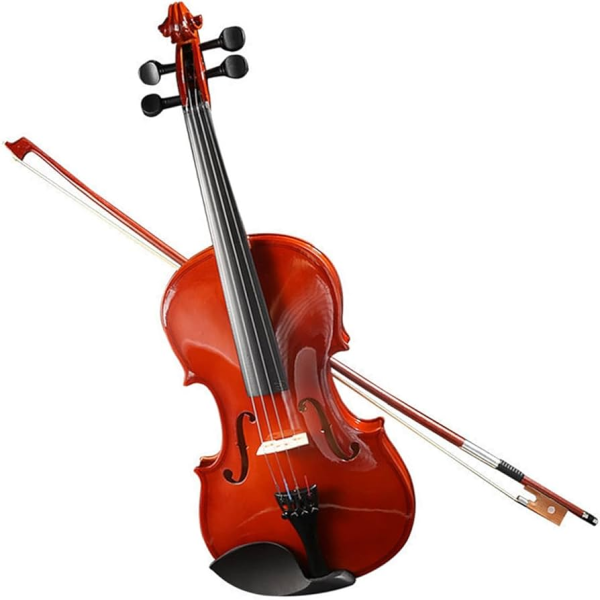
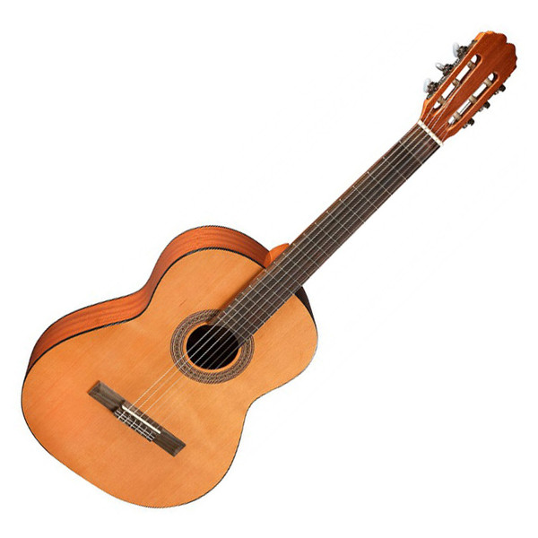
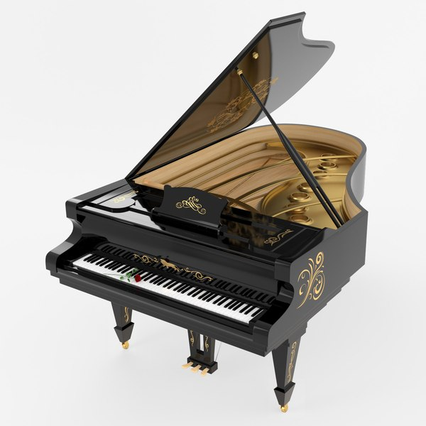
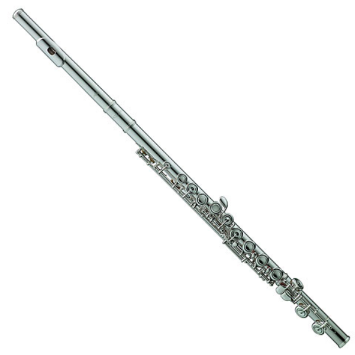
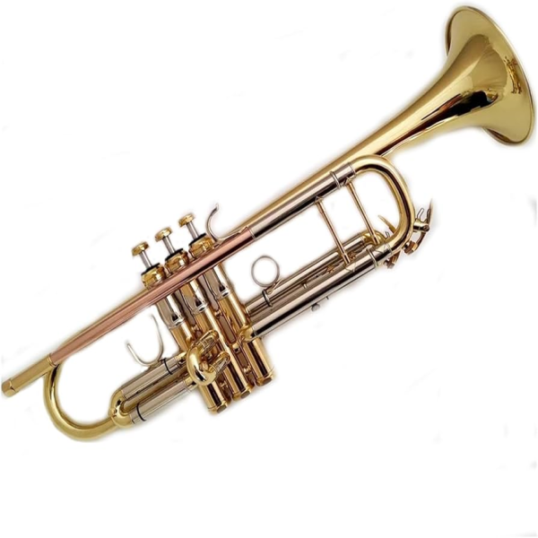
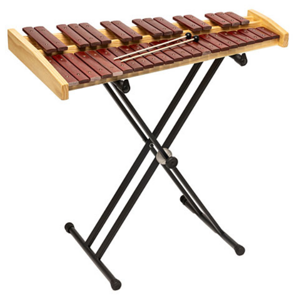
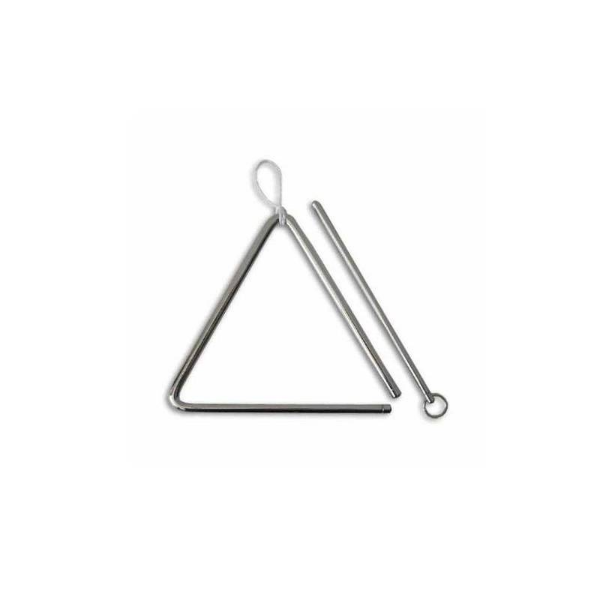

Els instruments musicals es classifiquen en famílies segons la manera com produeixen el so.
Alguns instruments fan vibrar una corda, altres fan vibrar l’aire i d’altres produeixen el so quan es colpegen.
Per això es divideixen en tres grans famílies:
Els instruments de corda produeixen el so quan una corda vibra. Aquesta vibració pot produir-se fregant la corda, pessigant-la o colpejant-la.

El violí és un instrument de corda fregada. El so es produeix quan l’arc frega les cordes.
Té un so agut, brillant i lleuger, semblant al cant d’un ocell. Per això sovint toca les melodies principals de la música.
És l’instrument més petit i agut de la família del violí i té quatre cordes.

La guitarra és un instrument de corda pulsada. Les cordes es fan sonar pessigant-les amb els dits o amb una pua.
El seu so és càlid i suau, i pot tocar melodies i acords al mateix temps.
Normalment té sis cordes i és un dels instruments més utilitzats a la música moderna.

El piano és un instrument de corda percudida. Quan premem una tecla, un petit martell colpeja una corda.
Té 88 tecles i pot produir sons molt greus i molt aguts.
És un instrument harmònic, perquè pot tocar melodies i acords al mateix temps, o fins i tot dues melodies diferents amb les dues mans.
Els instruments de vent produeixen el so fent vibrar l’aire dins del tub de l’instrument.

La flauta és un instrument de vent fusta. El so es produeix quan l’aire passa per l’embocadura.
Té un so agut, clar i brillant.
És molt àgil i pot tocar melodies ràpides i lleugeres.

La trompeta és un instrument de vent metall. El so es produeix quan vibren els llavis del músic.
Té un so brillant, potent i molt clar, que destaca fàcilment dins de l’orquestra.
Té tres pistons que permeten canviar les notes.
Els instruments de percussió produeixen el so quan es colpegen, sacsegen o freguen.

El xilòfon és un instrument de percussió de so determinat. Les seves làmines produeixen notes concretes.
El seu so és clar, sec i brillant.
Pot tocar melodies, igual que un piano o una flauta.

El triangle és un instrument de percussió metàl·lic.
El seu so és brillant i llarg, però no produeix una nota concreta.
S’utilitza sovint per afegir brillantor i color a la música.